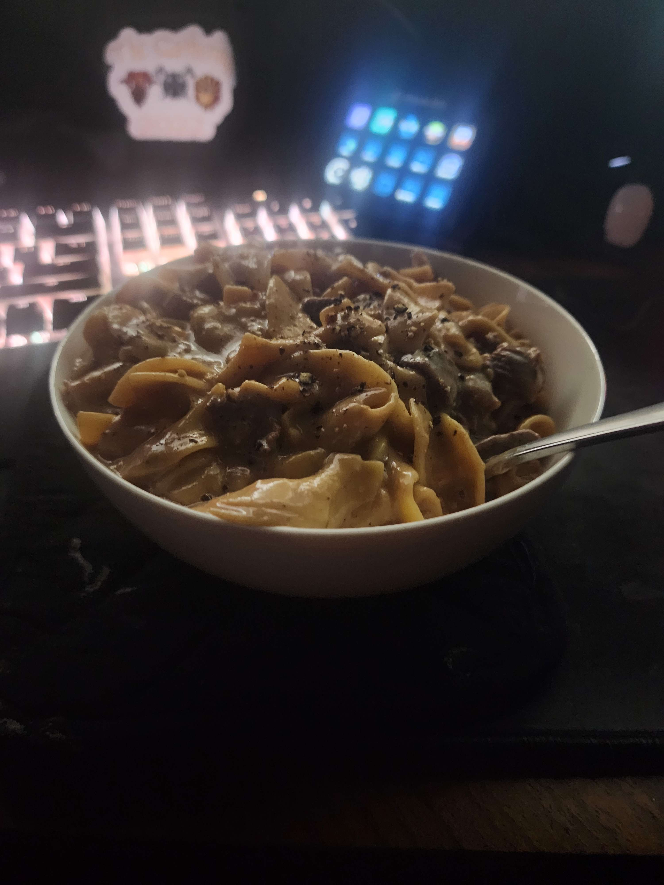

Stroganoff

Description
The best and fastest stroganoff you will ever have!
Ingredients
- 2 pounds ribeye steak, cut into 1-inch cubes
- salt and pepper to taste
- 2 tablespoons olive oil
- 1 tablespoon minced garlic
- 1 diced onion
- 3 sprigs fresh thyme
- 2 tablespoons all-purpose flour
-
3 cups low sodium beef broth (can add more if a small amount
remains)
- 2 teaspoons Worcestershire sauce
- 1 (12-ounce) package wide egg noodles
- 1/2 - 3/4 cup sour cream (can be done to taste)
-
2 tablespoons chopped fresh parsley leaves (optional, I just
garnish with more black pepper)
Steps
- Set a 6-qt Instant Pot to the high sauté setting.
-
Season beef with salt and pepper, to taste. Heat olive oil;
working in two batches, add beef and cook until evenly browned,
about 3-4 minutes; set aside.
-
Add garlic, onion and thyme. Cook, stirring occasionally, until
tender, about 3-4 minutes.
- Whisk in flour until lightly browned, about 1 minute.
-
Stir in beef broth and scrape bits off bottom, Worcestershire
and beef.
-
Select manual setting; adjust pressure to high, and set time for
12 minutes. When finished cooking, quick-release pressure
according to manufacturer’s directions.
- Stir in egg noodles.
-
Select manual setting; adjust pressure to high, and set time for
5 additional minutes. When finished cooking, quick-release
pressure according to manufacturer’s directions.
- Stir in sour cream; season with salt and pepper, to taste.
- Serve immediately, garnished with parsley, if desired.